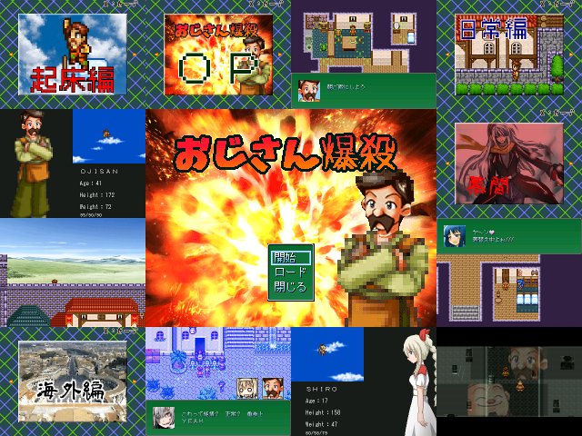

 |
|
| 作者：イグサ | |
| ツクール：2000 | |
| ジャンル：ふりーむで100万回見た | |
| 作者コメント： GW祭2015は初参加です！ シンボルを調べると即死したり、フラグが立ったりするオーソドックスな脱出ゲームです とりあえず、「即死→がめおば→タイトル画面」という糞みたいな仕様ではないのでご安心下さい ＜提出に伴う作者からのお知らせ＞ 脱出ゲーとは呼べなくなりました |
|
| 管理人コメント： ※みんな初参加です |
|
| ダウンロード(20.4MB_05/03更新) / 感想掲示板 | |
| 前の作品 / 次の作品 / TOPへ戻る | |